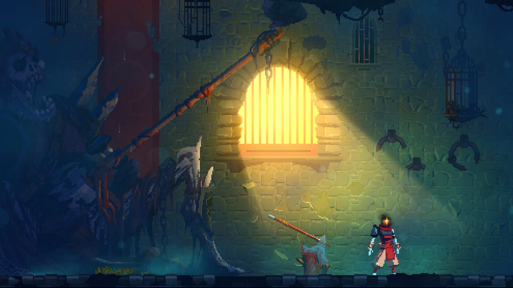
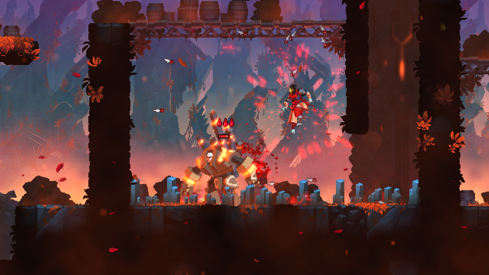
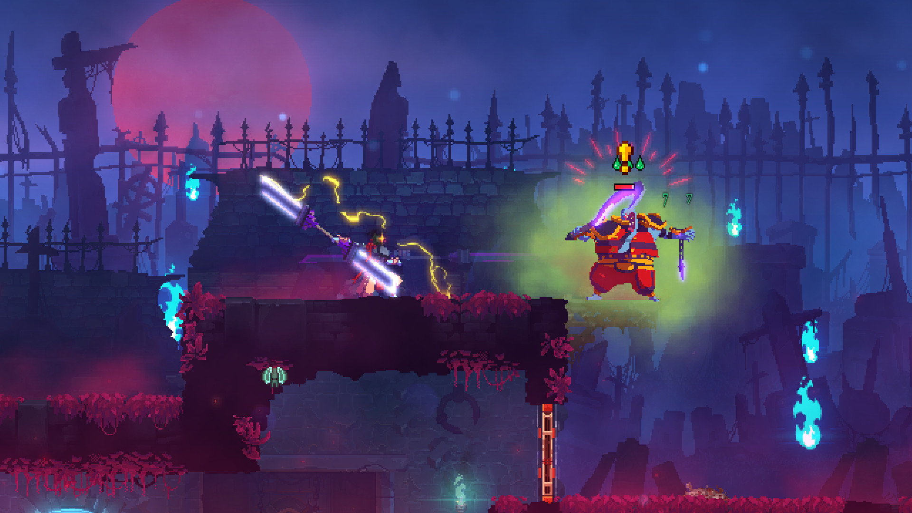
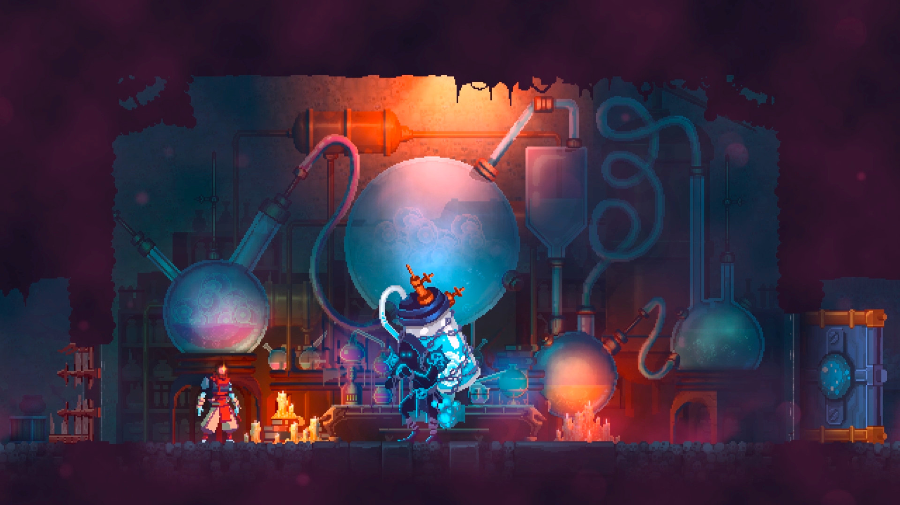

Dead Cells
Dead Cells is a rogue-lite, metroidvania inspired, action-platformer. You'll explore a sprawling, ever-changing castle... assuming you’re able to fight your way past its keepers in 2D souls-lite combat. No checkpoints. Kill, die, learn, repeat. Regular free content updates!
Rating: *****
Single player
Genre: Actie, Avontuur, Indie Ontwikkelaar: Motion Twin Uitgavedatum: 6 aug 2018




Systeemeisen
- Besturingssysteem: Windows 7+
- Processor: Intel i5+
- Geheugen: 2 GB RAM
- Grafische kaart: Nvidia 450 GTS / Radeon HD 5750 or better
- Opslagruimte: 500 MB beschikbare ruimte
- Aanvullende opmerkingen: DirectX 9.1+ or OpenGL 3.2+
recenties
- “Roguelike Dead Cells is genadeloos, goedgeefs, gevarieerd en diepgaand. Als een goede ouder helpt het spel je overeind wanneer je valt, legt uit wat er fout ging en geeft je een verse boterham mee om tijdens je volgende poging op te kauwen.”
- - Gamer.nl
- “Dead Cells combineert op succesvolle wijze de dynamiek van een roguelike met de stijl en itemvergaring van Castlevania. Het is geen game waar je in je eerste run direct de laatste baas zal halen, maar je steeds verder weet te komen door blauwdrukken van wapens die je vindt en runen die nieuwe paden openen. En ondanks dat het wat in herhaling kan vallen is Dead Cells iedere run opnieuw een geweldige ervaring.”
- - IGN